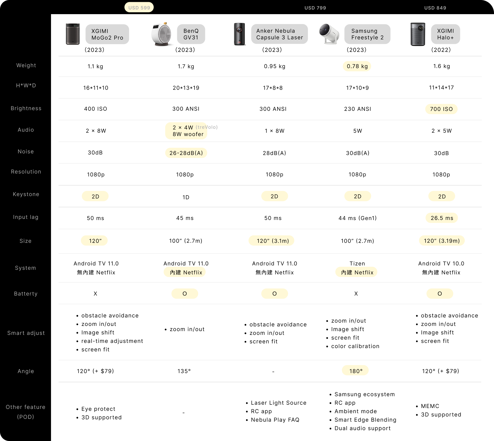
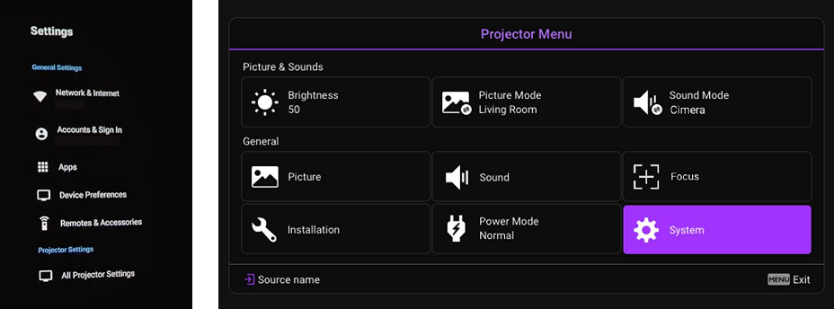

To drive sales of portable projectors, we conducted user research and testing, ultimately launching a projector that targets these users' needs, featuring a flexible base design that offers users the freedom to project from any desired angle while relaxing comfortably in bed. The first-year sales grew by 148%, and the accompanying app solution was downloaded at a rate 1.1 times the number of projectors sold.
As the PM proposed the initial requirements for the next-generation portable projector, I collaborated with the team to analyze the spec upgrades and conducted research to uncover design opportunities.
In the early phase of this project, we conducted heuristic evaluation and competitive analysis to identify the core problems of the previous generation portable projector and to further understand market trends.

From the comparison, we can see that the GV31’s strength lies in its streaming experience. Its convenient built-in system, paired with high-quality speakers and low operating noise, delivers outstanding audio-visual performance. However, when it comes to setup process, it falls short compared to other competing brands. We also observe that competitors have introduced distinctive features — primarily offering more convenient control options, such as remote control apps, or providing more diverse experiences, such as 3D support. (two menus img)

In addition, based on our heuristic evaluation, we found that the dongle and the low usability of the software UI could be critical issues for the GV31. First, the Android TV comes as a dongle that users need to install manually. However, since previous generations, users have consistently reported difficulties with the installation process, with some saying they don’t know how to install it or find it challenging to do so. Moreover, due to limitations inherent in the Android TV–based development approach, the OS software menu and the OSD are separate, which complicates the setting experience and may further confuse users.
After reviewing the known pain points, we wanted to assess whether we had truly fulfilled users’ needs for a portable projector and whether further design opportunities existed. To do so, we chose to conduct desk research within a tight development timeline, drawing primarily from a previous U.S. market survey, and complemented it with vibe coding using Python on discussions scraped from major forums in both markets. We then organized our research findings into a customer journey map to visualize the user experience across key touchpoints, and concretized the findings into personas to facilitate better communication throughout the development process. (CJM、Persona)
We found that user behaviors and needs in both the U.S. and Taiwan are largely consistent within this market segment. Users in the States reported mostly using projectors in the bedroom; some would occasionally place them in the living room or outdoors, such as in a garage. On the other hand, users in Taiwan also primarily use projectors in the bedroom. Regardless of location, many users frequently need to move the projector. In Taiwan, for example, limited space often requires users to store the device away after each use, and the repetitive setup process before every viewing can be frustrating.
In addition, we found enthusiastic discussions about ceiling projection in this study. Users often want to project onto the ceiling due to reasons such as feeling more comfortable or experiencing physical discomfort, like neck or hip pain from sitting for long periods. However, issues such as limited projection angles and noisy fans make them uncertain about which projector to purchase. Through our previous competitive analysis, we also found that few projectors on the market are specifically designed for the bedroom viewing experience.
We found that this group of users embraces a lifestyle shaped by technology. While their experience goals vary—some prioritize portability and versatility, others value spending cozy time watching shows with family, and some seek a moment to unwind alone after work—they share a common desire for technology that enhances and enriches their daily lives. The users were buying not just a projector, but the moments and atmosphere it could create.
Based on the STP framework, segmentation and targeting of the portable projector were clearly defined in previous research. Following this study, positioning was established, framing the product as "the most suitable projector for bedroom use" based on user needs. When we began brainstorming solutions, some ideas couldn’t be implemented due to project constraints—primarily the tight timeline and the limited flexibility of the Google TV framework. After extensive discussions with PM, TM, ID and OEM teams, we formulated three key hypotheses grounded in our findings:
(海哥簡報截圖)
Considering the diverse bedroom configurations in the target market, the GV50 offers users flexible and easy setup options. Its convenient integrated tripod and 135° vertical adjustment design enable users to quickly project onto their desired location.
(拿墊東西在他牌的 image 加小圖示: You might’ve experienced something similar) (GV50 stand gif，加小圖示：Tissue free!)
As we found that some users prefer setting up the projector manually rather than using the software at the beginning, the GV50 features a joystick and zoom lever to make the process quicker and more effortless.
(GV31 to GV50 btn img) (加個小圖示: A sleep timer was added to round out the bedroom viewing experience)
GV50 adopts the Google TV framework. While this choice introduces some design constraints, it effectively solves the problem of inconsistent UI structures, improves overall system stability, and—most importantly—delivers the full OTT service experience that users value most. Although customization is limited, we streamlined the system menu and brought frequently used functions to the forefront as much as possible.
(google tv menu before /after)
Fine-tuning the projection is effortless with smart adjustments like rotation, screen fit, obstacle avoidance, zoom, and repositioning.
(Function gif)
(smart remote intro) (assistant app intro)
(link: Explore more about the Smart Remote app project)
For users, the app not only offers quick access to key functions—like streaming and screen adjustment—but also brings added features that enrich the smart living experience.
(Business analyze form)
From a business perspective, the app enables us to build a closer relationship with users. We are able to deepen understanding of user behaviors, offer comprehensive customer services and further support branding goals despite Google TV’s constraints.
(img of other series)
Aside from the GV series, other BenQ product lines will gradually adopt the same Google TV framework, and therefore face similar design limitations. The development of these two software solutions opens up new design opportunities—allowing projectors to benefit from the strengths of Google TV while mitigating the drawbacks of limited customization.
To validate GV50 design, I led a usability test during the EVT phase. Due to differences in the development timeline, we first tested the projector itself, followed by a separate usability test for the apps.
With the aim of increasing the precision of our testing, we simulated real-world user conditions by guiding participants into a scenario where they had just received their newly purchased projector. Task design was based on the most frequent user behaviors and the core features of the GV50.
(test img) (test flow) (participants background)
Following are three key findings:
“It's hard to read the menu when the image hasn't been corrected on the ceiling yet”
On average, participants spent about 6 minutes manually adjusting the projection on the ceiling, yet most still reported feeling frustrated. We observed that when projecting onto ceilings with more constraints, the process of finding functions and making adjustments felt overly complex to users—particularly when the image was not yet properly aligned, which could make the UI difficult to read. As a result, we recommend implementing a toast notification when an obstacle is detected in the projection area—prompting users to enable the obstacle avoidance feature. This would shorten adjustment time and improve readability during ceiling projection. We also suggest that when users manually fine-tune the projection, the system should not immediately trigger auto-correction upon detecting device movement. Instead, it should request user confirmation to prevent the adjusted image from resetting unexpectedly. Lastly, since users tend to project in the same place, adding the ability to save and recall adjustment settings could be a valuable long-term improvement.
“I'm lying down far from the projector—using the remote is more convenient.”
We found that in certain scenarios, users preferred using the remote control. However, features like sleep timer and bluetooth speaker were located in three or more layers in the menu, making them feel neither quick nor intuitive to access. Given the constraints of Google TV, we documented these findings with PM for the future development. In the short term, we enhanced the functionality of the remote control app, allowing users to access commonly used features more quickly and conveniently.
Through interviews, we preliminarily validated users’ expectations for using the projector. They enjoy relaxing moments playing soft music in the morning, like having fun with their children by projecting entertaining content, and also value the time spent watching movies with family. The atmosphere and convenient experiences that the GV50 can create have captured their interest.
In addition, our findings include issues with the readability of the quick start guide, setup wizard, and menu wording. Also, to refine the overall experience, we revised interaction details—for instance, by shortening the duration that the zoom in/out UI remains visible.
After the launch of the GV50, its first-year sales increased by 148% compared to the previous generation. The remote control app was downloaded approximately 1.1 times the number of projectors sold.